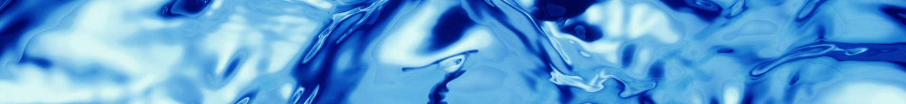

Вода фото которой поразит весь мир
Вода фото которой поразит весь мир
Далее пойдет рассказ о том, как качественно и красиво заснять каплю воды, или какое вода фото может создать благодаря каплям.

Шаг №1 вода фотоПервое что необходимо это правильная посудина для воды, именно то место куда будет падать ваша капелька. Если вы желаете чтоб капля имела определенный цвет или оттенок, выбирайте цветную посудину поскольку именно цвет этой посудины будет отражаться в капле. В случает если желание сделать цветную каплю есть, а посудины нет, вы сможете отлично обойтись стеклянной емкостью и цветным листом бумаги под ней.
Так же при создании фото очень важно использовать фоны (разумеется, если вы снимаете не живой источник). Для этого используйте узоры, цветные холсты, цветы и прочие интересные материалы – в результате вы получите каплю и интересный размытый фот сзади.
Шаг №2 Штатив – важнейшая деталь для капли воды фото которой создается только благодаря этому устройству, поскольку без него увы вы будете только мучатся. При использовании штатива во время работы, вы фокусируетесь на одной точке, выбираете самый удобный ракурсы и делая серию снимков создаете необходимый. Штатив необходимо установить так, чтоб вода фото на была четко посреди кадра. После установите на фотоаппарате «ручной режим съемки» и сделайте фокус на точке где будет капля (проще всего сделать фокус указав туда пальцем). Самое оптимальное фото получается на выдержке 1/200, диафрагма f4-f5 что позволит получить гораздо большую глубину снимка.
Так же, фотографами замечено что отличные фото получаются при приглушенном свете и работе вспышки.
Шаг №3
Ваше время для создания фото воды
Удобнее всего делать каплю через пипетку. Необходимо несколько раз попрактиковать с этим чтоб более менее точно определить для себя скорость падения капли при разном нажатии на пипетку, и только после этого необходимо пробовать снимать.
Попыток будет много, но результат того стоит. Фотографируйте когда капля будет у самой воды.
Так же, кроме использования для фотосъемки капли берите не только воду но и любые другие жидкости. Экспериментируйте с плотностью, цветами и емкостями для жидкостей. Разнообразие всевозможных вариантов безмерное. Вода фото которой будет выглядеть незабываемо, облетит весь мир!